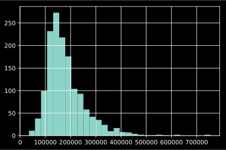
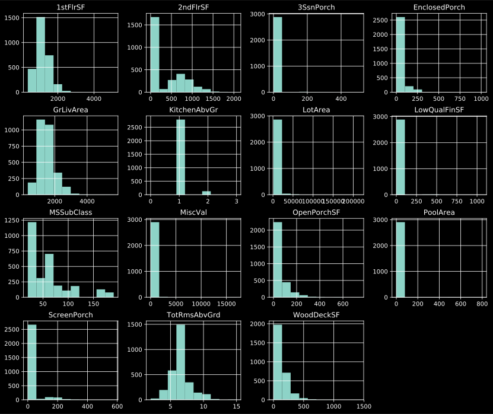

Explore the house prices kaggle competition
Thanks to pmarcelino and serigne for their great work.
This is my second kaggle competition to practice on the knowledge of data analysis and machine learning. Unlike the Titanic competition, this house prices is a regression problem. So there will be much difference from the previous binary classification. For this competition, we will have 79 variables that describe various aspects of a house and with a price in the training data set. And then predict the prices of houses in the testing set based on the 79 variables. This will be a long journey with the 79 variables. So let’s start to explore the data with the data description.
Table of Contents
import os
# from typing import List, Union
# from pysnooper import snoop
import pandas as pd
# import matplotlib.pyplot as plt
# import numpy as np
loc = 'house price'
if os.getcwd().split('/')[-1] != loc:
os.chdir(loc)
df_train = pd.read_csv(f'input/train.csv')
df_test = pd.read_csv(f'input/test.csv')
Data exploration
Let’s firstly have a look at the data we have.
print(df_train.shape)
df_train.head()
(1460, 81)
| Id | MSSubClass | MSZoning | LotFrontage | LotArea | Street | Alley | LotShape | LandContour | Utilities | ... | PoolArea | PoolQC | Fence | MiscFeature | MiscVal | MoSold | YrSold | SaleType | SaleCondition | SalePrice | |
|---|---|---|---|---|---|---|---|---|---|---|---|---|---|---|---|---|---|---|---|---|---|
| 0 | 1 | 60 | RL | 65.0 | 8450 | Pave | NaN | Reg | Lvl | AllPub | ... | 0 | NaN | NaN | NaN | 0 | 2 | 2008 | WD | Normal | 208500 |
| 1 | 2 | 20 | RL | 80.0 | 9600 | Pave | NaN | Reg | Lvl | AllPub | ... | 0 | NaN | NaN | NaN | 0 | 5 | 2007 | WD | Normal | 181500 |
| 2 | 3 | 60 | RL | 68.0 | 11250 | Pave | NaN | IR1 | Lvl | AllPub | ... | 0 | NaN | NaN | NaN | 0 | 9 | 2008 | WD | Normal | 223500 |
| 3 | 4 | 70 | RL | 60.0 | 9550 | Pave | NaN | IR1 | Lvl | AllPub | ... | 0 | NaN | NaN | NaN | 0 | 2 | 2006 | WD | Abnorml | 140000 |
| 4 | 5 | 60 | RL | 84.0 | 14260 | Pave | NaN | IR1 | Lvl | AllPub | ... | 0 | NaN | NaN | NaN | 0 | 12 | 2008 | WD | Normal | 250000 |
5 rows × 81 columns
print(df_test.shape)
df_test.head()
(1459, 80)
| Id | MSSubClass | MSZoning | LotFrontage | LotArea | Street | Alley | LotShape | LandContour | Utilities | ... | ScreenPorch | PoolArea | PoolQC | Fence | MiscFeature | MiscVal | MoSold | YrSold | SaleType | SaleCondition | |
|---|---|---|---|---|---|---|---|---|---|---|---|---|---|---|---|---|---|---|---|---|---|
| 0 | 1461 | 20 | RH | 80.0 | 11622 | Pave | NaN | Reg | Lvl | AllPub | ... | 120 | 0 | NaN | MnPrv | NaN | 0 | 6 | 2010 | WD | Normal |
| 1 | 1462 | 20 | RL | 81.0 | 14267 | Pave | NaN | IR1 | Lvl | AllPub | ... | 0 | 0 | NaN | NaN | Gar2 | 12500 | 6 | 2010 | WD | Normal |
| 2 | 1463 | 60 | RL | 74.0 | 13830 | Pave | NaN | IR1 | Lvl | AllPub | ... | 0 | 0 | NaN | MnPrv | NaN | 0 | 3 | 2010 | WD | Normal |
| 3 | 1464 | 60 | RL | 78.0 | 9978 | Pave | NaN | IR1 | Lvl | AllPub | ... | 0 | 0 | NaN | NaN | NaN | 0 | 6 | 2010 | WD | Normal |
| 4 | 1465 | 120 | RL | 43.0 | 5005 | Pave | NaN | IR1 | HLS | AllPub | ... | 144 | 0 | NaN | NaN | NaN | 0 | 1 | 2010 | WD | Normal |
5 rows × 80 columns
So we have 1460 rows in training set and 1459 rows in testing set. Besides the price col in the training set, both data sets have 79 cols of variables + 1 col of ‘Id’.
Check missing values
Now let’s check if there is any missing value in the data.
def cols_missing_value(df):
df_null_sum = df.isnull().sum()
df_na = (df.isnull().sum() / len(df)) * 100
missing_data = pd.concat({'Missing Ratio %': df_na,
'Total': df_null_sum}, axis='columns')
return missing_data.drop(missing_data[missing_data['Total'] == 0].index
).sort_values(by='Total', ascending=False)
cols_missing_value(df_train)
| Missing Ratio % | Total | |
|---|---|---|
| PoolQC | 99.520548 | 1453 |
| MiscFeature | 96.301370 | 1406 |
| Alley | 93.767123 | 1369 |
| Fence | 80.753425 | 1179 |
| FireplaceQu | 47.260274 | 690 |
| LotFrontage | 17.739726 | 259 |
| GarageType | 5.547945 | 81 |
| GarageYrBlt | 5.547945 | 81 |
| GarageFinish | 5.547945 | 81 |
| GarageQual | 5.547945 | 81 |
| GarageCond | 5.547945 | 81 |
| BsmtExposure | 2.602740 | 38 |
| BsmtFinType2 | 2.602740 | 38 |
| BsmtFinType1 | 2.534247 | 37 |
| BsmtCond | 2.534247 | 37 |
| BsmtQual | 2.534247 | 37 |
| MasVnrArea | 0.547945 | 8 |
| MasVnrType | 0.547945 | 8 |
| Electrical | 0.068493 | 1 |
cols_missing_value(pd.concat((df_train[df_test.columns], df_test)))
| Missing Ratio % | Total | |
|---|---|---|
| PoolQC | 99.657417 | 2909 |
| MiscFeature | 96.402878 | 2814 |
| Alley | 93.216855 | 2721 |
| Fence | 80.438506 | 2348 |
| FireplaceQu | 48.646797 | 1420 |
| LotFrontage | 16.649538 | 486 |
| GarageFinish | 5.447071 | 159 |
| GarageQual | 5.447071 | 159 |
| GarageCond | 5.447071 | 159 |
| GarageYrBlt | 5.447071 | 159 |
| GarageType | 5.378554 | 157 |
| BsmtExposure | 2.809181 | 82 |
| BsmtCond | 2.809181 | 82 |
| BsmtQual | 2.774923 | 81 |
| BsmtFinType2 | 2.740665 | 80 |
| BsmtFinType1 | 2.706406 | 79 |
| MasVnrType | 0.822199 | 24 |
| MasVnrArea | 0.787941 | 23 |
| MSZoning | 0.137033 | 4 |
| BsmtFullBath | 0.068517 | 2 |
| BsmtHalfBath | 0.068517 | 2 |
| Functional | 0.068517 | 2 |
| Utilities | 0.068517 | 2 |
| GarageArea | 0.034258 | 1 |
| GarageCars | 0.034258 | 1 |
| Electrical | 0.034258 | 1 |
| KitchenQual | 0.034258 | 1 |
| TotalBsmtSF | 0.034258 | 1 |
| BsmtUnfSF | 0.034258 | 1 |
| BsmtFinSF2 | 0.034258 | 1 |
| BsmtFinSF1 | 0.034258 | 1 |
| Exterior2nd | 0.034258 | 1 |
| Exterior1st | 0.034258 | 1 |
| SaleType | 0.034258 | 1 |
There are quite a lot of missing values, some cols are missing almost all of the data. We need to handle the missing values by imputation or other methods later.
A look at distributions
As we’re predicting the ‘SalePrice’, so we should have a look at the stats of this col.
df_train['SalePrice'].describe()
count 1460.000000
mean 180921.195890
std 79442.502883
min 34900.000000
25% 129975.000000
50% 163000.000000
75% 214000.000000
max 755000.000000
Name: SalePrice, dtype: float64
df_train['SalePrice'].hist(bins=30)
<matplotlib.axes._subplots.AxesSubplot at 0x11414e4a8>

The values of ‘SalePrice’ does fall in a normal distribution. In general, learning algorithms benefit from standardization of the data set. So we’ll transform the target values by QuantileTransformer and TransformedTargetRegressor later when training and testing.
Now let’s have a look at other columns’ skewnesses.
from scipy.stats import skew
# Concat training and testing sets together to see the full picture
df_all = pd.concat((df_train, df_test)).reset_index(
drop=True).drop(['SalePrice'], axis='columns')
numeric_cols = df_all.select_dtypes(
exclude=['object', 'category']).columns
# Check the skewness of the numerical cols
skewed_cols = df_all[numeric_cols].apply(
lambda col: skew(col)).sort_values(ascending=False)
skewness = pd.DataFrame({'Skewness': skewed_cols})
skewness.head(10)
skewness = skewness[abs(skewness['Skewness']) > 0.75]
print(f'{skewness.shape[0]} skewed numerical columns.')
df_all[skewness.index].hist(figsize=(14, 12))
/Users/pcx/.pyenv/versions/ml/lib/python3.7/site-packages/ipykernel_launcher.py:5: FutureWarning: Sorting because non-concatenation axis is not aligned. A future version
of pandas will change to not sort by default.
To accept the future behavior, pass 'sort=False'.
To retain the current behavior and silence the warning, pass 'sort=True'.
"""
15 skewed numerical columns.
array([[<matplotlib.axes._subplots.AxesSubplot object at 0x1209d3550>,
<matplotlib.axes._subplots.AxesSubplot object at 0x1041d86d8>,
<matplotlib.axes._subplots.AxesSubplot object at 0x104200c50>,
<matplotlib.axes._subplots.AxesSubplot object at 0x104233208>],
[<matplotlib.axes._subplots.AxesSubplot object at 0x120b97780>,
<matplotlib.axes._subplots.AxesSubplot object at 0x120bc1cf8>,
<matplotlib.axes._subplots.AxesSubplot object at 0x120bef2b0>,
<matplotlib.axes._subplots.AxesSubplot object at 0x120c17860>],
[<matplotlib.axes._subplots.AxesSubplot object at 0x120c17898>,
<matplotlib.axes._subplots.AxesSubplot object at 0x120c71358>,
<matplotlib.axes._subplots.AxesSubplot object at 0x120f2a8d0>,
<matplotlib.axes._subplots.AxesSubplot object at 0x120f53e48>],
[<matplotlib.axes._subplots.AxesSubplot object at 0x120f84400>,
<matplotlib.axes._subplots.AxesSubplot object at 0x120fac978>,
<matplotlib.axes._subplots.AxesSubplot object at 0x120fd3ef0>,
<matplotlib.axes._subplots.AxesSubplot object at 0x1210054a8>]],
dtype=object)

We also need to handle the skewed variables later.
Preprocessing data
Impute missing values
There are quite a lot of missing values, some cols are missing almost all of the data. Now look into the data description to see what the variables really are and how should we deal with them. We’re now concating the training set and testing set since we need to handle the missing values in both data sets. We will split them when we need.
# keep Id col for later unpack training and testing df
ids_train = df_train['Id']
ids_test = df_test['Id']
Y_train = df_train['SalePrice'].values
df_all = pd.concat((df_train, df_test)).reset_index(
drop=True).drop(['SalePrice'], axis='columns')
/Users/pcx/.pyenv/versions/ml/lib/python3.7/site-packages/ipykernel_launcher.py:6: FutureWarning: Sorting because non-concatenation axis is not aligned. A future version
of pandas will change to not sort by default.
To accept the future behavior, pass 'sort=False'.
To retain the current behavior and silence the warning, pass 'sort=True'.
‘PoolQC’ (Pool quality) is the one with most missing values, and NA stands for “No Pool” (described in data_description.txt), so the missing values should be replaced by str “No Pool”. And this col should be an ordered categorical variable.
df_all['PoolQC'] = df_all['PoolQC'].fillna("No Pool")
The same applies to ‘MiscFeature’, ‘Alley’, ‘Fence’, ‘FireplaceQu’, ‘GarageType’, ‘GarageFinish’, ‘GarageQual’, ‘GarageCond’, ‘BsmtQual’, ‘BsmtCond’, ‘BsmtExposure’, ‘BsmtFinType1’, ‘BsmtFinType2’, ‘MasVnrType’
df_all['MiscFeature'] = df_all['MiscFeature'].fillna("None")
df_all['Alley'] = df_all['Alley'].fillna("No Alley access")
df_all['Fence'] = df_all['Fence'].fillna("No Fence")
df_all['FireplaceQu'] = df_all['FireplaceQu'].fillna("No Fireplace")
df_all['GarageType'] = df_all['GarageType'].fillna("No Garage")
df_all['GarageFinish'] = df_all['GarageFinish'].fillna("No Garage")
df_all['GarageQual'] = df_all['GarageQual'].fillna("No Garage")
df_all['GarageCond'] = df_all['GarageCond'].fillna("No Garage")
df_all['BsmtCond'] = df_all['BsmtCond'].fillna("No Basement")
df_all['BsmtQual'] = df_all['BsmtQual'].fillna("No Basement")
df_all['BsmtExposure'] = df_all['BsmtExposure'].fillna("No Basement")
df_all['BsmtFinType1'] = df_all['BsmtFinType1'].fillna("No Basement")
df_all['BsmtFinType2'] = df_all['BsmtFinType2'].fillna("No Basement")
Now let’s check ‘GarageYrBlt’, ‘GarageArea’, ‘GarageCars’. Since only 1 record of ‘GarageCars’ is missing, and it’s ‘GarageType’ is ‘Detchd’, so let’s make it as size of the mode/median of ‘GarageCars’ when type is ‘Detchd’.
df_all[df_all['GarageCars'].isnull()]
df_all[df_all['GarageCars'].isnull()]['GarageType']
df_all['GarageCars'] = df_all['GarageCars'].fillna(
int(df_all[df_all['GarageType'] == 'Detchd']['GarageCars'].mode()))
It’s the same record for the missing ‘GarageArea’ value, as we filled its ‘GarageCars’ to the mode value, we will fill the area as the mean value of ‘GarageArea’ where the ‘GarageCars’ == mode value of ‘Detchd’.
df_all[df_all['GarageArea'].isnull()]
df_all['GarageArea'] = df_all['GarageArea'].fillna(
df_all[df_all['GarageType'] == 'Detchd']['GarageArea'].mean())
# df_all[df_all['GarageYrBlt'].isnull()]['GarageType']
For the records that have no garage, we set the null value of ‘GarageYrBlt’ to 0, but for the records with type ‘Detchd’, we set the null value to the median value of the built year with type ‘Detchd’.
year_median = df_all[df_all['GarageType'] == 'Detchd']['GarageYrBlt'].median()
df_all['GarageYrBlt'] = df_all['GarageYrBlt'][
df_all['GarageType'] == 'Detchd'].fillna(year_median)
df_all['GarageYrBlt'] = df_all['GarageYrBlt'].fillna(0)
Since there are quite many missing value for ‘LotFrontage’ (16.65%), we would drop this col.
df_all = df_all.drop('LotFrontage', axis='columns')
Filling with 0 for those likely to be 0.
bsmt_zero_missing = ['BsmtFinSF1', 'BsmtFinSF2',
'BsmtUnfSF', 'TotalBsmtSF', 'BsmtFullBath', 'BsmtHalfBath']
for col in bsmt_zero_missing:
df_all[col] = df_all[col].fillna(0)
‘MasVnrArea’ and ‘MasVnrType’
df_all[df_all['MasVnrType'].isnull()]['MasVnrArea']
df_all['MasVnrType'].astype('category').value_counts()
None 1742
BrkFace 879
Stone 249
BrkCmn 25
Name: MasVnrType, dtype: int64
For all the records with missing values of ‘MasVnrType’, 1 record with
‘MasVnrArea’ is not NaN, so we filling its type as ‘BrkFace’, which is the
most occurred none-None type. Other missing values of ‘MasVnrType’ we will
fill in with the most common None, so its ‘MasVnrArea’ will be 0.
df_all['MasVnrType'] = df_all['MasVnrType'][
df_all['MasVnrArea'].notna()].fillna('BrkFace')
df_all['MasVnrType'] = df_all['MasVnrType'].fillna('None')
df_all['MasVnrArea'] = df_all['MasVnrArea'].fillna(0)
Set the NaN to the mostly occurred value ‘RL’.
df_all['MSZoning'].astype('category').value_counts()
df_all['MSZoning'] = df_all['MSZoning'].fillna('RL')
# Set the NaN to the mostly occurred value 'AllPub'.
df_all['Utilities'].astype('category').value_counts()
df_all['Utilities'] = df_all['Utilities'].fillna('AllPub')
# keep or not?
df_all = df_all.drop(['Utilities'], axis='columns')
Set NaN to mostly occurred value for the rest cols.
cols_nan_mode = ['Functional', 'Electrical', 'KitchenQual',
'Exterior1st', 'Exterior2nd', 'SaleType', 'MSSubClass']
for col in cols_nan_mode:
df_all[col] = df_all[col].fillna(df_all[col].mode()[0])
cols_missing_value(df_all)
| Missing Ratio % | Total |
|---|
Now there’s no missing values. Let’s move to the next part.
Transform categorical variables
We’ll firstly transform some of the variables from numerical to categorical as they should be. And add one variable.
cols_num_cat = ['MSSubClass', 'YrSold', 'MoSold']
for col in cols_num_cat:
df_all[col] = df_all[col].astype('category')
# Adding total sqfootage feature
df_all['TotalSF'] = df_all['TotalBsmtSF'] + \
df_all['1stFlrSF'] + df_all['2ndFlrSF']
Check and handle outliers
After handling the missing values, now we have a look at if there are outliers in the training set with the target variable by scatter plots.
import matplotlib.pyplot as plt
df_train = df_all[:len(ids_train)]
df_test = df_all[len(ids_train):]
cols = df_train.select_dtypes(['int64', 'float64'])
# cols = df_train.select_dtypes(['int64', 'float64'])
df_train = pd.concat([df_train, pd.DataFrame(
Y_train, columns=['SalePrice'])], axis='columns')
fig, axes = plt.subplots(6, 6, figsize=(30, 30))
for i, col in enumerate(cols):
df_train.plot.scatter(x=col, y='SalePrice', ax=axes[i // 6, i % 6])

The continuous variable ‘GrLivArea’ seems having 2 values have very different “hehavior”. The 2 bottom right dots may be very inferential that have quite big areas but low prices. Let’s remove them to see if it’s better for the results. After removing these 2 rows, we would see that outliers in other cols such ‘TotalBsmtSF’ and ‘TotalSF’ are disappeared as well.
df_train = df_train.drop(df_train[(df_train['GrLivArea'] > 4000) &
(df_train['SalePrice'] < 250000)].index)
# Packing back data sets after removing outliers in training set.
ids_train = df_train['Id']
ids_test = df_test['Id']
Y_train = df_train['SalePrice'].values
df_all = pd.concat((df_train, df_test)).reset_index(
drop=True).drop(['SalePrice'], axis='columns')
Transform skewed variables
We will transform the skewed variables into normal distributions by
quantile_transform.
numeric_cols = df_all.select_dtypes(
exclude=['object', 'category']).columns
# Check the skewnesses of the numerical cols
skewed_cols = df_all[numeric_cols].apply(
lambda col: skew(col)).sort_values(ascending=False)
skewness = pd.DataFrame({'Skewness': skewed_cols})
skewness = skewness[abs(skewness['Skewness']) > 0.75]
print(f'{skewness.shape[0]} skewed numerical columns.')
from sklearn.preprocessing import quantile_transform
import numpy as np
skewed_features = skewness.index
df_all[skewed_features] = quantile_transform(
df_all[skewed_features], output_distribution='normal', copy=True)
20 skewed numerical columns.
# Check again for the skewnesses of the numerical cols
skewed_cols = df_all[numeric_cols].apply(
lambda col: skew(col)).sort_values(ascending=False)
skewness = pd.DataFrame({'Skewness': skewed_cols})
skewness = skewness[abs(skewness['Skewness']) > 0.75]
print(f'{skewness.shape[0]} skewed numerical columns.')
11 skewed numerical columns.
Encode categorical valuee
Transform categorical cols by using pd.get_dummies().
print(df_all.shape)
# Column names in the DataFrame to be encoded. If columns is None then all the
# columns with object or category dtype will be converted.
df_all = pd.get_dummies(df_all)
print(df_all.shape)
(2917, 79)
(2917, 330)
Training and testing
Base model
Now we will start to train and test with a base model with default parameters to see how it would perform as a base line. Root-Mean-Squared-Error (RMSE) as the evaluation metric for the competition, the equation is:
$$\operatorname{RMSE}(y, \hat{y})=\sqrt{\frac{1}{n_{\text {samples }}} \sum_{i=0}^{n_{\text {symples }}-1}\left(y_{i}-\hat{y}_{i}\right)^{2}}$$.
# Unpack training and testing data sets
df_train = df_all[:len(ids_train)].drop(['Id'], axis='columns')
df_test = df_all[len(ids_train):].drop(['Id'], axis='columns')
X_train = df_train.values
X_test = df_test
import numpy as np
from sklearn.pipeline import Pipeline
from sklearn.linear_model import Lasso, ElasticNet, Ridge
from sklearn.model_selection import cross_val_score
from sklearn.metrics import mean_squared_error, make_scorer
from sklearn.compose import TransformedTargetRegressor
from sklearn.preprocessing import QuantileTransformer
Y_train_norm = np.log1p(Y_train)
# there's no implementation of RMSE in the scikit-learn library, so we have to
# define a scorer of RMSE
def rmse_cal(y_true, y_pred):
return np.sqrt(mean_squared_error(y_true, y_pred))
# return np.sqrt(np.sum(np.square(y_pred - y_true)) / len(y_pred))
# if the custom score function is a loss (greater_is_better=False), the output
# of the python function is negated by the scorer object, conforming to the
# cross validation convention that scorers return higher values for better
# models.
rmse = make_scorer(rmse_cal, greater_is_better=False)
# ridgepip = Pipeline([
# ('tran', TransformedTargetRegressor(
# regressor=Lasso(), func=np.log1p, inverse_func=np.expm1)),
# ('tran', TransformedTargetRegressor(
# regressor=Ridge(), func=np.log1p, inverse_func=np.expm1)),
# ])
models = [
Lasso(),
# ridgepip,
# # ElasticNet(),
Ridge(),
]
CV = 5
for m in models:
scores = -cross_val_score(m, X_train, Y_train_norm,
scoring=rmse, cv=5, n_jobs=-1)
print(f'{type(m).__name__}\n'
f'Scores: {scores}\n'
# +/-std*2 for 95% confidence interval
f'Accuracy: {scores.mean(): 0.4f} (+/-{scores.std() * 2: 0.4f})\n'
f'{"-"*20}')
Lasso
Scores: [0.22425222 0.23934427 0.23998284 0.24165163 0.23227816]
Accuracy: 0.2355 (+/- 0.0129)
--------------------
Ridge
Scores: [0.11456344 0.12197379 0.13560006 0.1083432 0.1172416 ]
Accuracy: 0.1195 (+/- 0.0183)
--------------------
GridSearch for best model with best parameters
The base models give somehow good results. The CV RMSE score of the /Ridge/
model is around the top-1000 in the competition’s leaderboard. Now let’s try
to find the best parameters for these and other models with GridSearchCV.
from sklearn.svm import SVR
from sklearn.pipeline import Pipeline
from sklearn.preprocessing import RobustScaler
from sklearn.kernel_ridge import KernelRidge
from sklearn.model_selection import train_test_split, GridSearchCV
from sklearn.ensemble import GradientBoostingRegressor
from sklearn import metrics
Y_train_norm = np.log1p(Y_train)
X_train_cv, X_test_cv, Y_train_cv, Y_test_cv = train_test_split(
X_train, Y_train_norm, test_size=0.3)
param_space = {
'rob_lasso': {
'model': Pipeline([('sca', RobustScaler()), ('model', Lasso())]),
'params': {
'model__alpha': [0.00005, 0.0004, 0.0005, 0.0007, 0.005, 0.05, 0.5, 0.8, 1],
}
},
'ridge': {
'model': Ridge(),
'params': {
'alpha': [1e-3, 1e-2, 1e-1, 1, 10],
}
},
'kernel_ridge': {
'model': KernelRidge(),
'params': {
'alpha': [1e-3, 1e-2, 1e-1, 1, 10],
}
},
'elastic_net': {
'model': Pipeline([('sca', RobustScaler()), ('model', ElasticNet())]),
'params': {
'model__alpha': [0.00005, 0.0004, 0.0005, 0.0007, 0.005, 0.05, 0.5, 0.8, 1],
# Note that a good choice of list of values for l1_ratio is often to
# put more values close to 1 (i.e. Lasso) and less close to 0 (i.e.
# Ridge)
'model__l1_ratio': [.1, .5, .7, .75, .8, .85, .9, .95, .97, .99, .995, 1],
}
},
# 'gboost': {
# 'model': GradientBoostingRegressor(),
# 'params': {
# 'loss': ['ls', 'lad', 'huber', 'quantile'],
# 'learning_rate': [0.01, 0.1],
# 'n_estimators': [100, 500, 1000, 3000],
# 'max_depth': [2, 3, 4],
# 'min_samples_split': [2, 5, 10],
# }
# },
# 'svr': {
# 'model': SVR(),
# 'params': {
# 'kernel': ['linear', 'rbf'],
# 'C': [1, 10],
# }
# },
}
gs_rec = []
# grid search parameters
for name, pair in param_space.items():
print(f'{name}---------------')
gs_rg = GridSearchCV(pair['model'], pair['params'],
scoring=rmse, cv=CV, error_score=0, n_jobs=-1)
gs_rg.fit(X_train, Y_train_norm)
print(gs_rg.best_params_)
print(gs_rg.best_score_)
gs_rg_cv = GridSearchCV(pair['model'], pair['params'],
scoring=rmse, cv=CV, error_score=0, n_jobs=-1)
gs_rg_cv.fit(X_train_cv, Y_train_cv)
pred_test = gs_rg_cv.predict(X_test_cv)
y_score = rmse_cal(Y_test_cv, pred_test)
print(gs_rg_cv.best_params_)
print(gs_rg_cv.best_score_)
print(y_score)
gs_rec.append({
'name': name,
'params': gs_rg.best_params_,
'score': -gs_rg.best_score_,
'cv_test_params': gs_rg_cv.best_params_,
'cv_test_score': y_score
})
df_gs = pd.DataFrame(gs_rec, columns=['name', 'score', 'params',
'cv_test_score', 'cv_test_params']
).sort_values(by=['score', 'cv_test_score'])
df_gs
rob_lasso---------------
{'model__alpha': 0.0005}
-0.1108321642082426
{'model__alpha': 0.0005}
-0.11385591248537665
0.1092651116732159
ridge---------------
{'alpha': 10}
-0.11417733254437629
{'alpha': 10}
-0.11723423641202352
0.11022009984391984
kernel_ridge---------------
{'alpha': 10}
-0.11675117173959225
{'alpha': 10}
-0.1209044169077714
0.11171230919473786
elastic_net---------------
{'model__alpha': 0.0005, 'model__l1_ratio': 0.9}
-0.11081242246612653
{'model__alpha': 0.0007, 'model__l1_ratio': 0.8}
-0.1138195082928615
0.10934894252124043
| name | score | params | cv_test_score | cv_test_params | |
|---|---|---|---|---|---|
| 3 | elastic_net | 0.110812 | {'model__alpha': 0.0005, 'model__l1_ratio': 0.9} | 0.109349 | {'model__alpha': 0.0007, 'model__l1_ratio': 0.8} |
| 0 | rob_lasso | 0.110832 | {'model__alpha': 0.0005} | 0.109265 | {'model__alpha': 0.0005} |
| 1 | ridge | 0.114177 | {'alpha': 10} | 0.110220 | {'alpha': 10} |
| 2 | kernel_ridge | 0.116751 | {'alpha': 10} | 0.111712 | {'alpha': 10} |
Now let’s Train with the best model so far and predict on the test data. As
aforementioned, the values of ‘SalePrice’ does fall in a normal distribution.
So we’ll transform the target values by QuantileTransformer and
TransformedTargetRegressor.
from datetime import datetime
# model = Pipeline(
# [('sca', RobustScaler()), ('model', TransformedTargetRegressor(
# regressor=ElasticNet(alpha=0.0005, l1_ratio=0.85), func=np.log1p, inverse_func=np.expm1))])
model = Pipeline(
[('sca', RobustScaler()), ('model', TransformedTargetRegressor(
regressor=ElasticNet(alpha=0.0005, l1_ratio=0.85),
# regressor=Lasso(alpha=0.0005),
transformer=QuantileTransformer(output_distribution='normal')))])
model.fit(X_train, Y_train)
pred = model.predict(X_test)
def submit(ids, pred, suffix):
sub = pd.DataFrame()
sub['Id'] = ids_test
sub['SalePrice'] = pred
timestamp = datetime.now().strftime('%Y-%m-%d_%H-%M-%S')
# sub.to_csv(
# f'result/kaggle1_sub_{suffix}_{score:.5f}.csv', index=False)
sub.to_csv(
f'submissions/{suffix}_{timestamp}.csv.gz', index=False,
compression='gzip')
submit(ids_test, pred, 'elastic_net')